![Eight heatmaps of tournament predictor MPKI as built, one for each global history length from 1 to 8 bits, over local history length 2 to 13 bits and 2 to 512 histories on a shared colour scale; the panels from 3 bits upward are nearly identical above 8 histories, falling from about 47 at short local histories to 27 at 13 bits, while the bottom rows with 2 or 4 histories improve from about 61 to 49 MPKI as the global history lengthens, and the final design's cell at 4 bits, 32 histories and 10 bits is outlined at 40 MPKI](../images/pipelined-processor/bp-heatmap-tournament-as-built.png)
Personal project - 2026 - GitHub
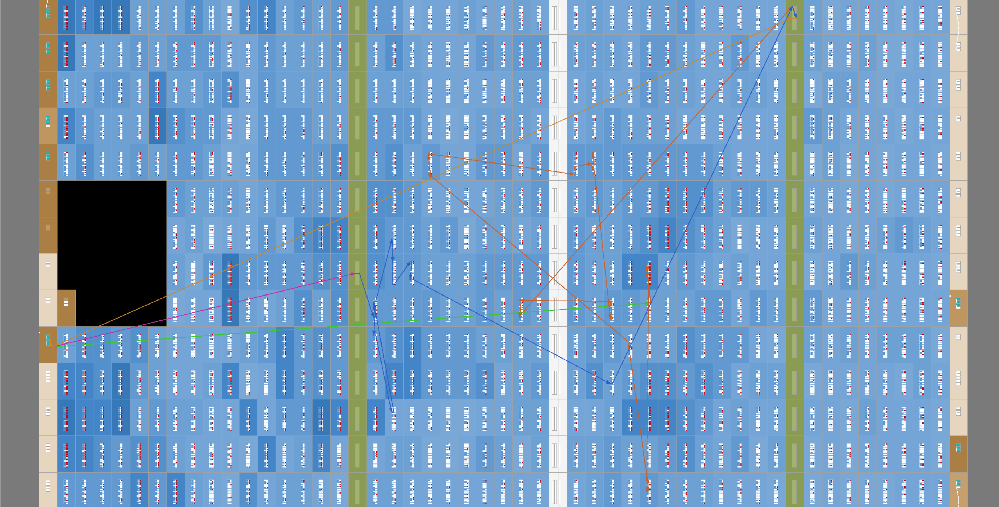
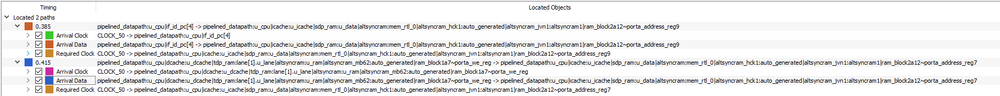
This project is a five-stage, in-order RISC-V (RV32I) processor, written in Verilog and run on the Cyclone II field-programmable gate array (FPGA) of an Altera DE1 board. The design began as a textbook five-stage pipeline and was extended in verified steps into a processor with full forwarding and a choice of five branch predictors. An 8 KB instruction cache and a 16 KB data cache sit in front of the board's 512 KB of off-chip static random-access memory (SRAM). The processor runs at 50 MHz and uses all 52 of the FPGA's block RAMs, and Table 1 summarizes the final design.
| ISA | RV32I (no control and status registers (CSRs), traps or interrupts) |
| Pipeline | IF, ID, EX, MEM, WB, in order, with full forwarding |
| Clock | 50 MHz, with an Fmax of about 51 MHz |
| Branch prediction | Tournament (3,460 bits of state) in ID by default; bimodal, correlating, gshare or local selectable at build time |
| Caches | 8 KB instruction and 16 KB data, direct mapped, 16-byte lines; write-back data cache with a one-line write-back buffer |
| Main memory | 512 KB asynchronous SRAM, with a 12-cycle clean data cache miss |
| FPGA use | About 13,000 of 18,752 logic elements (70%), all 52 M4K block RAMs |
| Benchmarks | 19 programs, 3.35 million instructions, 1.086 cycles per instruction on the board |
Most of the effort went into establishing that the design is correct, rather than into adding features. A pipeline can compute the correct result while stalling when it does not need to, and a design that passes simulation can still be built differently by the synthesis tool. For this reason, every change was checked against an independent reference model in simulation, and the board's own performance counters were read back over JTAG, the board's USB debug interface, and compared with a cycle-exact prediction from simulation.
The following sections first describe the pipeline (Section 2), the memory system (Section 3) and the verification method (Section 4). Two studies follow. The first compares five branch predictors at every size from 8 bits to 36 Kbit of state (Section 5), and the second reduces the cost of a data cache miss from 42 cycles to 12 (Section 6). Section 7 combines the results of both studies into the final design, which runs the 19 benchmark programs in 4.0% fewer cycles than the original design on the board and spends 71% fewer cycles waiting on memory.
This section describes the pipeline stages, the valid bits and clock enable that govern every side effect, the handling of hazards, and the original branch predictor. The stages are the classic ones, instruction fetch (IF), instruction decode (ID), execute (EX), memory access (MEM) and write-back (WB), as shown in Figure 2. IF selects the next fetch address and sends it directly into the instruction cache, whose block RAM latches the address and returns the instruction on the following cycle, in ID. ID decodes the instruction, reads the register file and predicts branches. EX forwards operands, runs the arithmetic logic unit (ALU) and resolves branches, MEM accesses the data cache, and WB aligns load data and writes the register file.
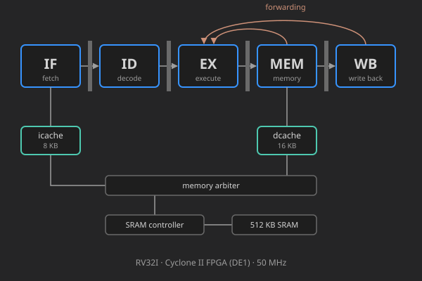
Each pipeline register carries a valid bit. A flushed or stalled slot becomes a bubble: its valid bit is cleared, while its other fields retain whatever stale values they held. This is harmless provided that every side effect, including register writes, memory accesses, forwarding, redirects and predictor training, is qualified by the valid bit of the stage that causes it, and this requirement became the central rule of the design.
The board can run the processor at 50 MHz, at 25 MHz, at about 1.5 Hz, or one cycle per button
press. Rather than generating slower clocks, the entire design runs on the 50 MHz clock, and the speed setting
drives a clock enable. When the enable is low, every pipeline register holds its value, valid bits included, so the
processor simply pauses. This mechanism was later reused for cache misses: the pipeline's enable is
clk_en && !dc_busy, so a data cache miss freezes the pipeline exactly as a slow clock does,
while the caches and the SRAM controller continue to run on every clock edge. Consequently, a miss is served at the
full 50 MHz in every speed mode, and no instruction is lost or repeated while the pipeline waits.
Most data hazards are resolved without stalling. Results are forwarded from MEM or WB into EX, with MEM taking
priority since it holds the younger write. The forwarded value is the final write-back value, which is resolved in
EX, so jal and lui forward pc + 4 and the immediate rather than the
raw ALU output. The register file also writes through, so an instruction in ID reads a value that is being written
back in the same cycle. Table 2 lists how each hazard is handled and what it costs.
| Hazard | Handled by | Cost |
|---|---|---|
| ALU result used by the next instruction | Forwarding from MEM or WB into EX | 0 cycles |
| Load result used by the next instruction | Load-use interlock | 1 cycle |
| Store right after the load that produces its data | Load-to-store forwarding in MEM | 0 cycles |
Branch misprediction or jalr | Redirect from EX | 1 cycle |
The only stall occurs when a load is followed immediately by an instruction that uses the loaded value. The load-use interlock compares register numbers only for the operands an instruction actually reads, so immediate bits that happen to resemble a register number never cause a false stall. A store directly behind the load that produces its store data does not stall either, because when the store reaches MEM the load is already in WB, and the store takes its data from there. As a result, the pipeline loses cycles only to load-use pairs and to redirects from EX.
Branches are predicted in ID and resolved in EX by a dedicated comparator, which is kept outside the ALU so that the
comparison does not wait on the shifter and the result multiplexer. A jal is always predicted taken in
ID, and a jalr is resolved in EX. A correctly predicted taken branch costs nothing, and a misprediction
costs one cycle. The first predictor was a bimodal table of 32 two-bit saturating counters indexed by the program
counter (PC), which reduced flushes on an insertion sort benchmark from 4,519 to 1,568 and the run time from 30,841
to 27,892 cycles. Four further predictors were later added behind the same interface, and the study in
Section 5 led to a 3,460-bit tournament predictor becoming the default.
Prediction was placed in ID rather than IF for timing reasons. Predicting in IF would place the predictor's lookup on the same path as the redirect from EX into the next fetch address, which was already the longest path in the design. In ID, the instruction has already been decoded, so the predicted target is simply the PC plus the immediate. Since the branch comparison in EX arrives last, the next-PC logic is also built for both outcomes of the comparison, and the comparison only selects between the two results in a final two-input multiplexer. This arrangement keeps the redirect path short, although Section 7.3 shows that a large enough predictor eventually becomes the critical path itself.
The FPGA's 52 M4K block RAMs, each a 4 Kbit memory block, hold only about 26 KB, so main memory resides in the board's 512 KB SRAM chip and the block RAMs serve as caches in front of it. This section describes the original memory system, whose organization was kept in the final design, while Section 6 describes the changes that later reduced the cost of a miss. The low 256 KB of the SRAM holds code and the high 256 KB holds data, so code and data occupy separate address spaces and a store can never overwrite an instruction. Both caches are direct mapped with 16-byte lines, which divides an 18-bit address as shown in Table 3.
| Cache | Lines | Tag | Index | Offset (word, byte) |
|---|---|---|---|---|
| Instruction cache, 8 KB | 512 | bits 17–13 | bits 12–4 | bits 3–0 |
| Data cache, 16 KB | 1,024 | bits 17–14 | bits 13–4 | bits 3–0 |
The data cache is write-back and allocates on a store miss. Its data is divided into four byte lanes, each a
separate RAM holding one byte of every word, so a byte or halfword store enables only the lanes it writes and
completes in a single cycle without a read-modify-write. A load reads the data RAM on its way from MEM to WB, so a
hit costs no extra cycles. A store, however, writes on the clock edge leaving MEM, so the cache must know whether
it hits before that edge. To meet this requirement, the tag RAM is addressed with the ALU result while the access
is still in EX, and the tag comparison takes place in MEM. A miss raises busy, which freezes the
pipeline as described in Section 2.1.
Each byte lane is a true dual-port RAM. One port belongs to the pipeline and is addressed directly from the EX/MEM pipeline register, which keeps that address path a plain wire, while the other belongs to the cache controller. In the original design, the controller handled a miss by writing back a dirty victim, reading the new line from SRAM, writing it into the lanes one word per cycle, and writing the tag last, so that a partially written line was never valid. A miss cost 42 cycles, or 82 cycles when a dirty line had to be written back first.
The instruction cache is read-only. Its tags and instructions are read together and checked in ID, and a miss holds the fetch and sends a bubble into EX while the older instructions continue. The cache powers up holding the program from the FPGA's configuration image, so a program of up to 8 KB runs without first loading the SRAM. This feature also made it possible to evaluate many programs on a single compiled design, as described in Section 4.2.
The SRAM chip has a 16-bit data bus, so the controller transfers a 16-byte line as eight 16-bit beats. In the original controller, each beat had a full cycle of setup, a two-cycle strobe and a full cycle of hold, with every SRAM pin driven from a register in the FPGA's I/O cells. A line transfer took about 35 cycles, a margin chosen for bring-up, and the board's memory test measured 21.7 MB/s. The two caches share the controller through an arbiter that serves the data cache first, since a data miss freezes the entire pipeline while an instruction miss only holds the front end.
Table 4 shows how the 52 block RAMs are divided between the two caches. The data cache's byte lanes alone require 32 of them, and the tags, valid bits and dirty bits take the remaining blocks. With every block RAM allocated to the caches, any further on-chip storage, including every bit of branch predictor state, must be built from logic elements, a constraint that determines the hardware cost of the predictors in Section 5.7.
| Block RAM use | Data | Tag and valid | Dirty | Total |
|---|---|---|---|---|
| Data cache, 16 KB | 32 | 2 | 1 | 35 |
| Instruction cache, 8 KB | 16 | 1 | – | 17 |
| All | 52 of 52 |
This section describes how the design is checked in simulation and on the board. The same infrastructure was used to validate every change in the two studies that follow, so each optimization could be judged by its cycle count alone, with its correctness established separately.
Every test program is run both on the register-transfer level (RTL) design in Icarus Verilog, an open-source Verilog simulator, and on rvsim, an independent RV32I instruction-set simulator written in Python. The test runner compares the two retirement traces instruction by instruction, followed by the final register file and every nonzero word of data memory, read through any dirty lines still held in the data cache. Tests may additionally state expected register values and exact stall and flush counts, so a pipeline that stalls when it does not need to still fails. The flush count is also compared on every program with bp_model, a Python model of the selected branch predictor.
Directed tests target forwarding, load-use stalls at every distance, control flow, memory operations, branch prediction and data cache evictions. Random programs are biased towards short dependency distances, register x0, colliding loads and stores, loops and jumps. Half of their memory accesses use a base register that alternates between regions 16 KB apart, so that they compete for the same cache lines and force dirty evictions. Unit tests cover each predictor against bp_model on a 3,000-branch random stream, the SRAM controller, and the data cache with 50,000 random accesses against a reference memory.
Every pipeline test is also run with the clock enable low on alternate cycles and at random, and with the program fetched from SRAM rather than preloaded into the instruction cache. The results and the stall and flush counts must not change with the clock enable, since a frozen pipeline should behave exactly like a slower clock. In addition, a behavioural model of the SRAM checks the chip's timing rules, including setup and hold around the write strobe, access time and bus contention, in every simulation. The testbenches run at the board's 20 ns clock period, so the access-time check sees the same budget as the real chip.
On the board, the processor exposes 16 readout words, including the cycle, instruction, stall and flush counts, the cache miss counts and the four result registers. These are read over JTAG through In-System Sources and Probes, a debug core in Quartus II, Altera's FPGA design software, that uses no block RAM. To run many programs on the same placed and timed build, each program is written into the compiled design's instruction cache contents and only the final programming file is regenerated, which takes about 4 seconds instead of a full compilation. A board run passes only if all 16 words match the RTL simulation of the same program exactly. Consequently, every board result reported on this page agrees with simulation to the cycle.
The bimodal predictor of Section 2.3 was a starting point, so four further predictors were added behind the same interface and all five were compared on 19 benchmark programs, at every size from 8 bits of state to 36 Kbit. This section describes the predictors, the method used to evaluate 1,439 configurations, and the results for accuracy, hardware cost and performance.
The predictor and its table sizes are selected at build time in defines.vh. Each predictor performs
its lookup in ID, carries what it read to EX in a pred_meta field, and trains in EX when the branch
resolves, so training always updates the counter that produced the prediction. The original defaults were 5 PC
index bits, 4 bits of global history and 8 bits of local history, which give the tournament 1,860 bits of state.
Table 5 summarizes how each predictor chooses its two-bit counter and how much state it requires.
| Predictor | Chooses a two-bit counter using | State bits |
|---|---|---|
| Bimodal | The branch's PC | 2·2i |
| Correlating | The PC, concatenated with the last h branch outcomes (the global history) | 2·2i+h + h |
| Gshare | The PC, XORed with the global history | 2·2i+h + h |
| Local | The branch's own last l outcomes, from a table of 2i histories selected by the PC | 2i·l + 2·2l |
| Tournament | Local and gshare side by side, with a two-bit chooser per PC slot selecting one | Both, plus 2·2i |
Gshare and the tournament update their global history speculatively: a branch shifts its prediction into the history as it enters EX, and a misprediction restores the history the branch was predicted with, followed by its real outcome. Correlating, in contrast, shifts the history in when the branch resolves. Every counter resets to weakly not taken, and no table is tagged, so unrelated branches share a counter whenever their indices collide.
The programs come from Embench, CoreMark and riscv-tests, three widely used benchmark suites for embedded processors, and comprise 19 programs with 3.35 million instructions and about 929,000 conditional branches in total. Each program was run once in rvsim, and every conditional branch it executed was logged with its address, its outcome, and whether it followed directly behind another branch. A predictor cannot change which branches a program executes, only how many cycles it takes, so one log per program serves every configuration.
A Python model of each predictor was then written to reproduce the hardware's timing as well as its tables. The model looks up in ID and trains at the end of EX, so a branch directly behind another reads the table before the first branch's update lands, exactly as in the pipeline. Replaying the logs through the models covers all 1,439 configurations in about 15 minutes, with every program starting from a reset predictor as it would on the board. In comparison, simulating the RTL takes six minutes or more for a single configuration.
A model is only useful if it reproduces the hardware's answer, so it was checked at two further levels. First, 162 configurations, comprising every configuration plotted in Figure 4a, the five original defaults and the largest tournament that meets timing, ran all 19 programs on the full pipeline in Icarus Verilog. Each run had to retire exactly the instructions that rvsim did, and in all 3,078 runs the mispredictions matched the model's exactly, program by program. Second, the five original defaults and that tournament were built in Quartus and run on the DE1 at 50 MHz using the method of Section 4.2, and all 114 board runs matched the RTL simulation on every readout word.
These checks exposed one error in the model. Correlating and local predictors with no PC bits in their index cannot be built by the RTL, which always uses at least one, but the model had counted them as buildable. These configurations were removed from the accuracy curves of Figure 4, which changed only the leftmost points of the correlating and local curves, while the heatmaps of Sections 5.5 and 5.6 still show them, marked as model results. The edited branch logs of Section 5.3, which leave out libgcc's multiply and divide routines, have no program behind them to run on the RTL, so their results come from the model alone.
Accuracy is measured in mispredictions per thousand instructions (MPKI), totalled over all 19 programs. A misprediction costs one cycle in this pipeline, so MPKI is also the number of cycles a predictor loses per thousand instructions. Hardware cost was measured by compiling the whole design in Quartus at a selection of sizes.
RV32I has no multiply or divide instructions, so the compiler turns every a * b between
runtime values into a call to __mulsi3 in libgcc, GCC's support library, and every division into
__udivsi3 or one of its relatives. __mulsi3 is a shift-and-add loop with two branches per
bit of the multiplier: one tests the bit, and the other checks whether any bits remain. The bit test follows the
data, so it is only as predictable as the operands themselves. As shown in Figure 3, these routines account for 59%
of the instructions executed, 74% of the conditional branches and 87 to 90% of every predictor's mispredictions.
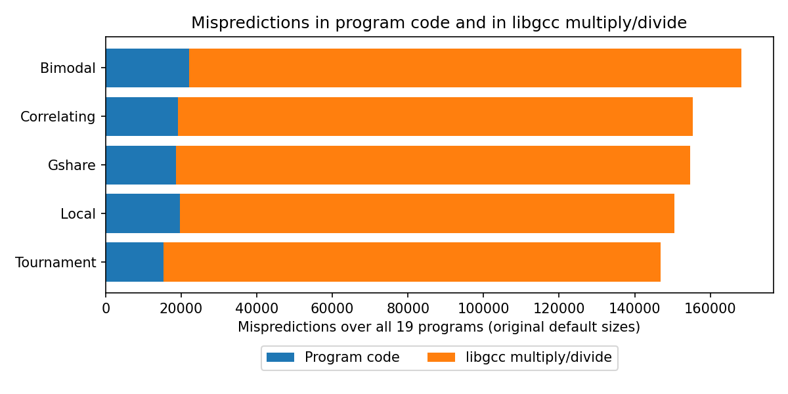
On this code, comparing predictors is largely a comparison of how well they guess multiplier bits, a task that a processor with the M extension never performs. Every configuration was therefore also evaluated on a second version of each branch log, with the branches inside these routines removed and their instructions subtracted from the count. A hardware multiplier would produce the same products, so the programs' own branches would be unchanged, and the edited log approximates the same programs on a core with hardware multiply and divide. In the rest of Section 5, as built refers to the original branch logs and without libgcc to the edited ones.
Figure 4 shows the best MPKI among the configurations that fit each state budget. Any two-bit counter outperforms a static prediction by a wide margin. Predicting backward branches taken and forward branches not taken gives 69.5 MPKI as built, whereas the 64-bit bimodal predictor gives 50.2, or 28% fewer mispredictions. Without libgcc, the gap widens to 44.3 against 16.1 MPKI, or 64% fewer. Bimodal stops improving at about 512 counters (49.65 MPKI), since on programs this small its table is not limited by aliasing but by its inability to learn patterns.
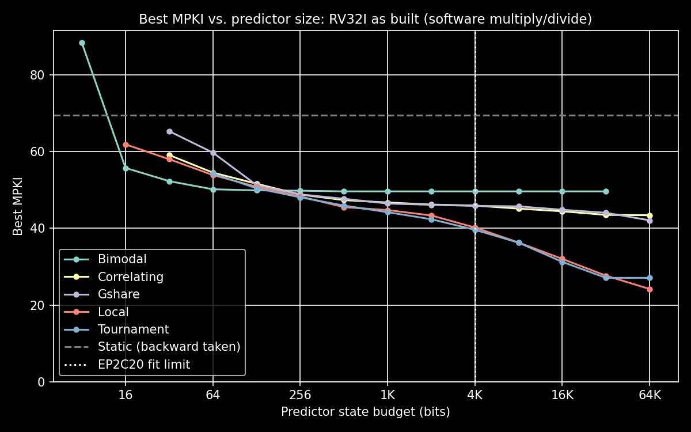
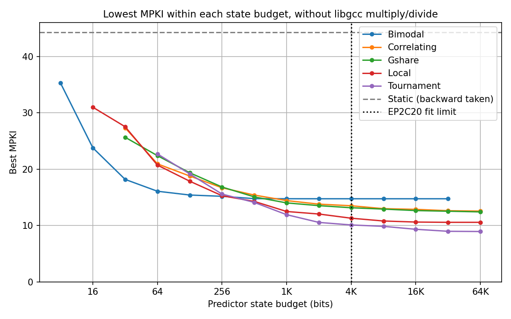
The predictors that use history pull ahead from about 1 Kbit, and the tournament is the best or tied at every size from there upward. At 1 Kbit without libgcc, it reaches 11.9 MPKI, against 12.5 for local, 14.0 for gshare, 14.4 for correlating and 14.75 for bimodal, as listed in Table 6. Very small budgets are the exception, since splitting 64 bits three ways leaves each component too small to be useful, and the bimodal predictor (50.2 MPKI) outperforms every 64-bit tournament (54.3 MPKI). Overall, history-based prediction pays off only once the budget reaches about 1 Kbit, and the tournament is the most accurate predictor from that point on.
| Budget | Bimodal | Correlating | Gshare | Local | Tournament |
|---|---|---|---|---|---|
| 256 bits | 49.8 / 15.2 | 48.8 / 16.7 | 48.9 / 16.8 | 48.3 / 15.3 | 48.1 / 15.6 |
| 1 Kbit | 49.7 / 14.8 | 46.8 / 14.4 | 46.5 / 14.0 | 44.8 / 12.5 | 44.2 / 11.9 |
| 4 Kbit | 49.7 / 14.8 | 46.0 / 13.5 | 45.9 / 13.2 | 40.2 / 11.3 | 39.6 / 10.1 |
| 32 Kbit | 49.7 / 14.8 | 43.5 / 12.6 | 44.1 / 12.5 | 27.7 / 10.6 | 27.1 / 9.0 |
As built, local appears to be the best single predictor at large sizes, and it keeps improving as each branch's history grows (Figure 5a). With 32 histories, 8 bits of history give 44.9 MPKI, 13 bits give 28.2 and 14 bits give 24.7. Without libgcc, the same three configurations give 12.7, 11.5 and 11.6 MPKI (Figure 5b), so the additional history length buys almost nothing.
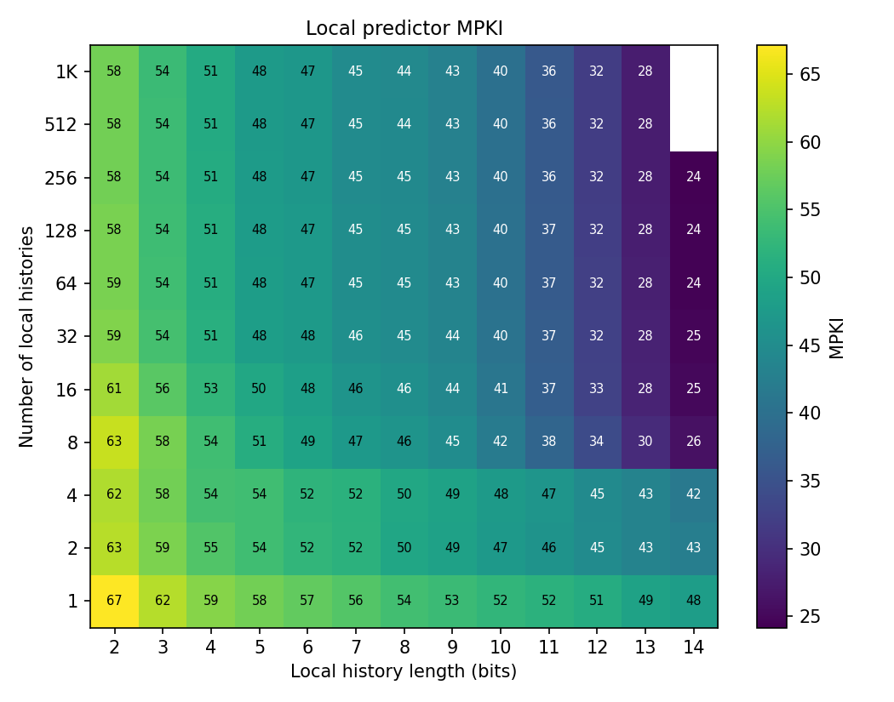
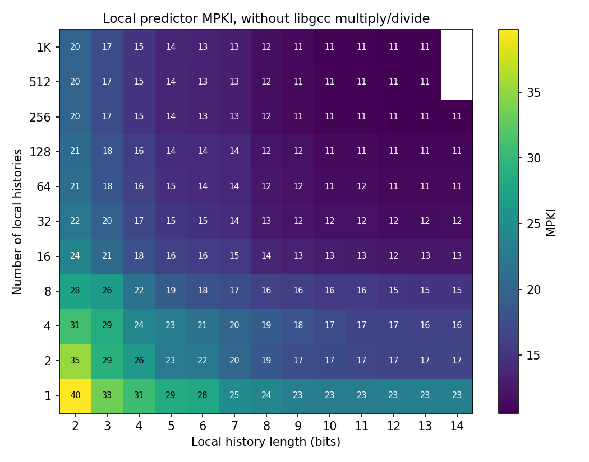
The mechanism lies in the bit-test branch of __mulsi3, whose local history is the sequence of
multiplier bits it has just seen. To illustrate, when a loop multiplies by the same value repeatedly, the bit test
produces the same sequence of outcomes on every call, and a history of 13 or 14 bits can hold most of that
sequence. A long enough history therefore recognizes which multiplier the loop is working through, and the
predictor effectively memorizes the multiplications the benchmarks repeat. This effect is real on this processor,
but it disappears with a hardware multiplier, so it is not a sound basis for sizing a predictor.
The tournament inherits this behaviour through its local side, as shown in Figure 6, which repeats the map for each global history length from 1 to 8 bits. With 4 bits of global history and 32 histories, its MPKI falls from 43.8 at 8 bits of local history to 39.9 at 10 bits and 27.5 at 13 bits, which is 0.6 to 1.1 MPKI below local alone at each length. The number of histories matters much less than their length, since from 16 histories upward the MPKI changes by about 0.5 or less at 8 bits of local history and above.
The global history length matters mainly when there are few histories, which is why the panels of Figure 6 differ almost only in their bottom two rows. The gshare table holds one counter for each combination of slot bits and global history bits, so with 2 or 4 slots and a short history it has only 4 to 64 counters. Lengthening the history from 1 to 8 bits therefore lowers the MPKI by up to 12.6 in these rows. With 8 or more histories, however, every global history length from 3 to 8 bits stays within 1.8 MPKI of 4 bits, while each extra bit doubles the gshare table. The final design's configuration of 32 histories with 10 bits each and 4 bits of global history is outlined in Figure 6, in the region where more histories or a longer global history lower the MPKI by 0.2 at most.
Correlating and gshare differ only in how they combine the global history with the PC. Correlating concatenates the two, while this design's gshare XORs the history into the top bits of the index, and the two remain within 3% of each other at every size (Figure 7). The textbook gshare XORs the history into the low bits instead, and that variant performs clearly worse here. At the built size of 512 counters with 4 bits of history, it has 17% more mispredictions as built (54.2 against 46.2 MPKI) and 47% more without libgcc (19.8 against 13.5). Even with its best history length at each size, it remains 16 to 18% behind without libgcc from 1 Kbit upward.
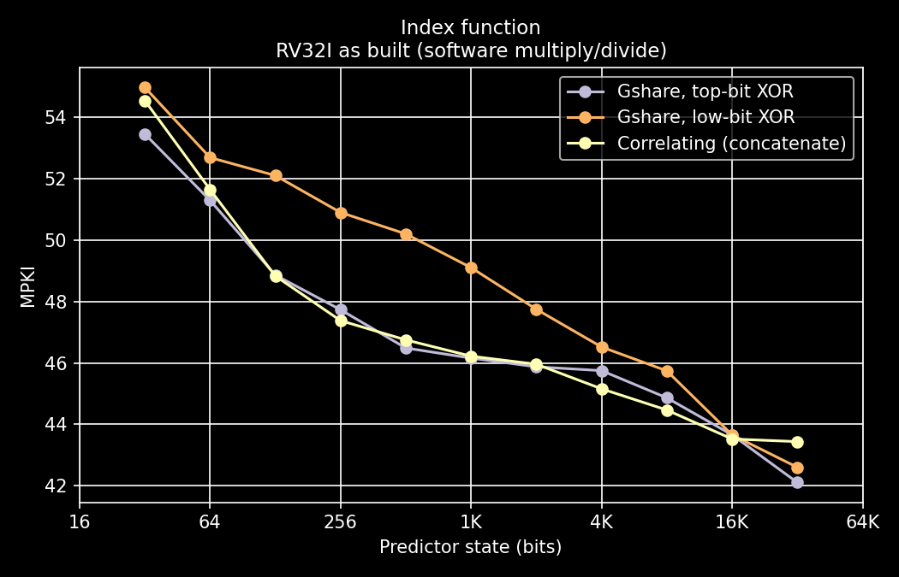
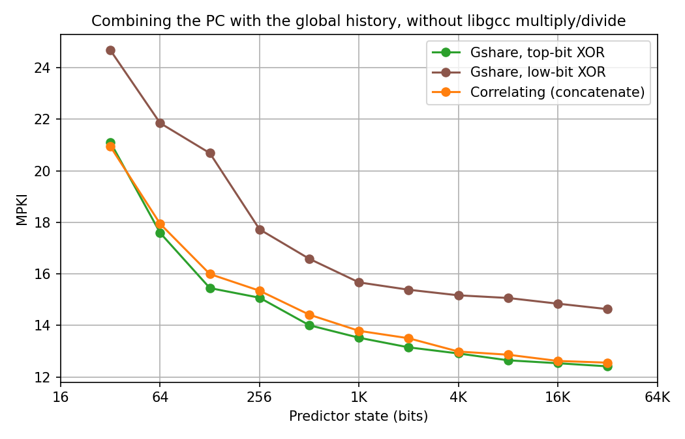
The cause is the role of the low index bits. These bits distinguish neighbouring branches, and in small programs the neighbours are the most frequently executed branches, so XORing the history into those bits makes the busiest branches collide. Placing the history in the top bits instead means that only branches 32 words apart can share a counter.
The best history length grows with the table, as shown in Figure 8. For gshare as built, it is 3 bits at 256 counters, 4 at 512, 5 at 1K and 13 at 8K to 16K counters, so the built default of 4 bits at 512 counters is the best for its size. Correlating follows the same trend, with 5 bits from 256 to 1K counters and 10 to 12 bits from 2K upward. Too long a history hurts a small table, since each branch's outcomes are then spread over many counters that train slowly and collide with other branches. At 64 counters, for example, gshare gives 48.9 MPKI with 3 bits of history but 53.3 with 5. The top diagonal of each map, where every index bit comes from the history, shows the difference between the two index functions most clearly. With no PC bits, correlating cannot tell branches apart and gives 51.7 MPKI at 2K counters, whereas gshare still XORs the PC into every index bit and gives 46.5.
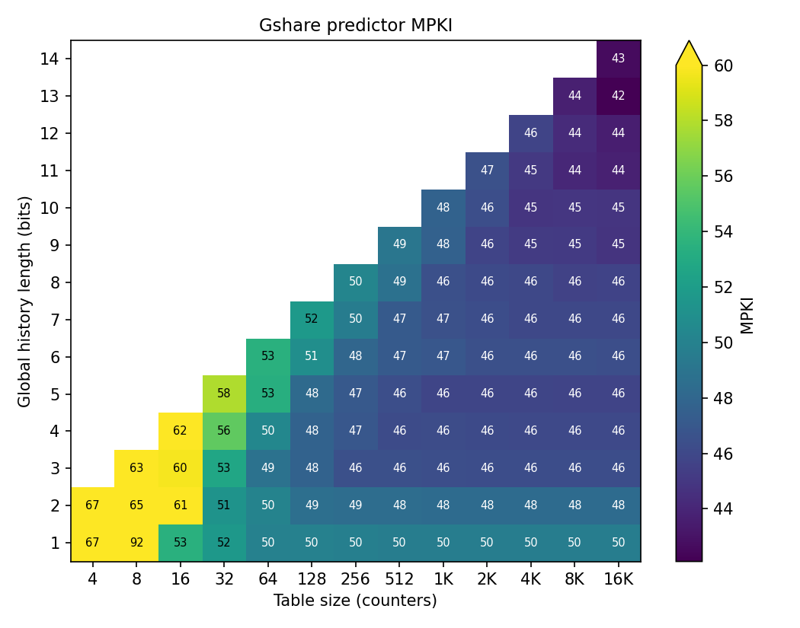
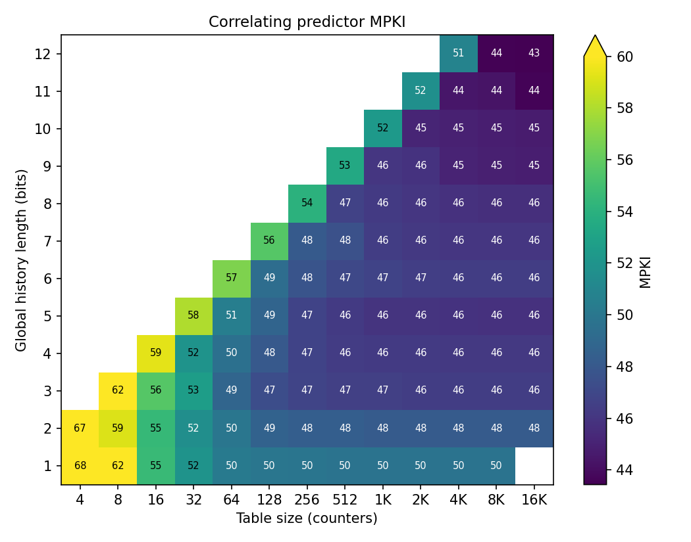
Speculative history, on the other hand, is worth little in a five-stage pipeline, saving at most about 0.3 MPKI at any size without libgcc. A branch resolves one stage after it is predicted, so only one branch can be in flight when the next is predicted, and a history updated at training is at most one outcome behind. Overall, where the history enters the index matters far more than when the history is updated.
Since the caches use all 52 block RAMs, every predictor bit is a flip-flop in a logic element, so the size of the whole design rises almost linearly with the predictor's state. Of the 22 builds compiled in Quartus, the 19 that fit give 2.3 to 2.4 logic elements per bit for the bimodal, correlating and gshare predictors in a least-squares fit, and 2.1 and 1.8 per bit for local and tournament. Growing a bimodal table from 64 to 2,048 bits, for example, takes the whole design from 6,310 to 10,906 logic elements. However, the chip ran out of logic array blocks (LABs) before it ran out of logic elements. Each LAB groups 16 logic elements, and the fitter required 1,225 to 1,227 LABs for each of the flat 4 Kbit tables (bimodal, correlating and gshare), against the 1,172 on the chip. None of them fit, as listed in Table 7, and the largest design that fit was a 3,843-bit tournament at 13,683 logic elements, or 73% of the chip's 18,752.
| Predictor | Largest build that fit and met 50 MHz | Logic elements | Fmax | Next larger build |
|---|---|---|---|---|
| Bimodal | 2,048 bits (1,024 counters) | 10,906 | 52.9 MHz | 4,096 bits: did not fit (1,225 LABs) |
| Correlating | 2,053 bits (1,024 counters, 5-bit history) | 11,073 | 52.8 MHz | 4,106 bits: did not fit (1,225 LABs) |
| Gshare | 2,053 bits (1,024 counters, 5-bit history) | 11,042 | 52.2 MHz | 4,105 bits: did not fit (1,227 LABs) |
| Local | 2,208 bits (16 histories of 10 bits) | 11,302 | 51.7 MHz | 3,328 bits (128 histories): 47.4 MHz |
| Tournament | 3,460 bits (32 histories of 10 bits, 4-bit global history) | 13,167 | 51.2 MHz | 3,843 bits (64 histories): 47.6 MHz |
Timing divides the predictors into two groups, as the last column of Table 7 shows. The flat tables kept 0.75 to 1.4 ns of slack (51.9 to 53.8 MHz) at every size that fit, since their lookup is not the slowest path, and they stopped growing only when the next doubling no longer fit. The two-level predictors behave differently, because in local the branch's history selects the counter and the counter feeds the next-PC logic, so the lookup is two table reads in series. Local's slack falls from 0.77 ns with 32 histories to 0.41 ns with 64 and −1.08 ns with 128 (47.4 MHz), and a tournament with 64 histories fails in the same way. The largest tournament that met 50 MHz has 3,460 bits (32 histories of 10 bits and 4 bits of global history), at 13,167 logic elements and 51.2 MHz, and gives 39.9 MPKI as built and 10.1 without libgcc. This configuration was therefore chosen as the predictor for the final design.
A misprediction costs only one cycle in a five-stage pipeline, which limits what any predictor can gain. With the bimodal predictor and the faster memory system of Section 6, the 19 programs take 3,672,931 cycles on the board, of which 168,250 (4.6%) are lost to mispredictions. The 3,460-bit tournament removes 34,573 of those cycles, or 0.94% of the run, and a tournament at the original default settings (1,860 bits) removes 21,371, or 0.58%. A deeper pipeline would multiply each of these differences.
No predictor wins on every program either. At 1 Kbit as built, the tournament is clearly best on five programs, bimodal on five, correlating on three, gshare on two and local on one, with three ties. The short programs favour bimodal, which has fewer counters to warm up from reset.
The broader result concerns where the branches come from. The multiply and divide loops in libgcc execute 59% of all instructions in these programs, so a hardware multiplier would save far more cycles than any of these predictors.
With the caches working, the time spent waiting on memory was measured, and five changes were made to reduce it. This section first quantifies where the cycles went, then describes each change in turn, from the SRAM interface inward to the cache controller, and finally reports the combined result in simulation and on the board.
Across the 19 benchmarks, the data cache froze the pipeline for 4.35% of all cycles, and for far more in small programs: 66% for vvadd and 58% for median. Every miss cost the same 42 cycles, of which 35 were spent by the SRAM controller moving the line. All 3,923 misses were compulsory, the first access to each line, so a larger or more associative cache would not have removed any of them. The only remaining lever was the cost of each miss.
To stress the memory system harder than the benchmarks do, three kernels were added. One streams through a 32 KB array, one copies between buffers 16 KB apart so that they share every cache index, and one follows pointers across 64 KB. On the original design, these kernels spend 72 to 93% of their cycles waiting on memory. Five changes were then made, each measured in RTL simulation and checked by the full test suite, as summarized in Table 8 and Figure 9.
| Design (each keeps the changes above it) | Clean miss | Dirty miss | 19 benchmarks | Memory kernels |
|---|---|---|---|---|
| Original | 42 | 82 | – | – |
WAIT_CYCLES = 1 | 34 | 66 | −0.8% | −16.5% |
| Pipelined reads | 18 | 58 | −2.5% | −36.2% |
| + Two-cycle writes | 18 | 41 | −2.5% | −45.6% |
| + Line-wide block RAM port, fewer controller states | 12 | 31 | −3.1% | −56.8% |
| + Write-back buffer | 12 | 29 | −3.1% | −61.2% |
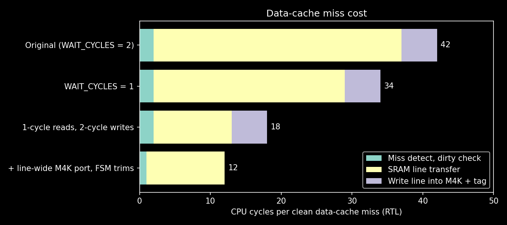
The SRAM controller gives each 16-bit beat a cycle of setup, a strobe of WAIT_CYCLES cycles and a
cycle of hold. Reducing WAIT_CYCLES from 2 to 1 is a one-parameter change, with which a beat takes
three cycles instead of four, a clean miss takes 34 cycles, and the board's full-memory test passes at
28.3 MB/s, up from 21.7, with no errors in 919 rounds. However, this approach cannot go further, because whole
cycles of setup and hold still surround every beat, and a read does not need them.
An asynchronous SRAM has no read strobe. With output enable held low, its data output simply follows the address, 10 ns after each change. Reads can therefore be pipelined: the controller places a new address on the bus at every clock edge, and on that same edge the input register in the FPGA's I/O cell samples the data for the previous address. A line read drops from 35 cycles to 11, and a clean miss from 42 cycles to 18, the largest single gain of the five changes.
The whole read must now fit in one 20 ns clock period, so the budget was checked against Quartus' pin timing. The address leaves the FPGA 5.72 ns after the clock edge in the slow corner, the SRAM takes 10 ns and the board traces add about 1 ns, for about 16.7 ns in total. Since the input register's setup time is negative (−1.39 ns), 21.4 ns are available, leaving about 4.7 ns of margin. For hold, the next address leaves the FPGA at least 3.2 ns after the edge in the fast corner, against a 1.6 ns requirement, and the chip continues to drive the old data slightly longer than that. The read path remains register to register, so a two-cycle read is available as a fallback if a board ever proves marginal, at a cost of 8 more cycles per miss.
Writes, in contrast, do need a strobe. With every pin changing on a rising edge, a write beat takes at least three
cycles, because the address cannot change on the same edge on which the write strobe WE_N rises.
Driving WE_N from a register clocked on the falling edge splits the beat into half cycles: the address
and data change on a rising edge, WE_N falls half a cycle later, and it rises half a cycle before the
next address. This gives 10 ns of setup, a 20 ns strobe and 10 ns of hold in two cycles, with
nothing changing on the same edge as WE_N, and Quartus still packs the register into the pin's I/O
cell. A line write drops from 35 cycles to 18, and a miss that must write back a dirty line drops from 58 cycles to
41.
With pipelined reads and two-cycle writes, the board's memory test moves 52.6 MB/s, 2.4 times the original, with no errors in 3,291 rounds. These rounds amount to about 3.4 billion 16-bit transfers, with every read checked, and the board measurements for each controller are shown in Figure 10.
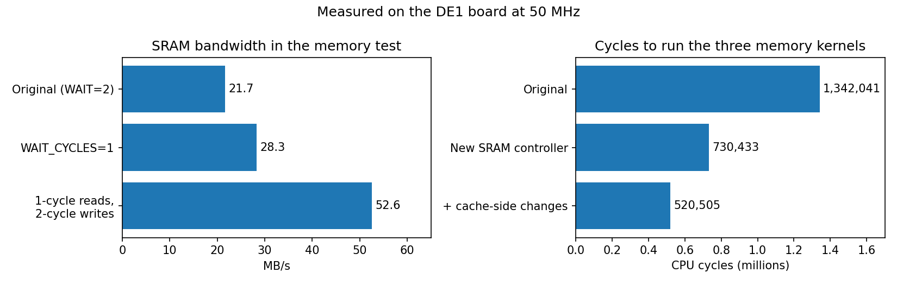
Once the SRAM was fast, the data cache's own bookkeeping became a large share of the remaining miss cost, and three changes removed most of it. First, each byte lane became a mixed-width dual-port block RAM, 4,096 × 8 on the pipeline's side and 1,024 × 32 on the controller's, so the controller writes a whole line in one cycle instead of four. Second, the dirty bit is read a stage early, together with the tag, with a bypass for a store hit to the same line just ahead in the pipeline. The original design had read the dirty bit after the miss precisely to avoid that case, and the bypass removes the state that did so. Third, the line is written as it arrives, passing straight from the controller into the RAM, along with its tag, on the edge on which the transfer completes.
As a result, the miss path shrinks to three states: idle, fill and done. Since the tag is written on the same edge as the data, a partially written line is still never valid. Quartus 13.0 does not infer a true dual-port block RAM with a clock enable, so the lanes instantiate altsyncram, Altera's block RAM primitive, directly, while a behavioural model is used in simulation. Together, these changes save 6 cycles per clean miss and 10 per dirty one. This is a small share of the original 42 cycles, but a third of the 18 that remained, and the design still fits in the same 52 block RAMs.
Finally, a dirty victim is parked in a one-line buffer and the new line is fetched first, so the pipeline continues while the write-back proceeds in the background. Any later miss waits for the buffer to drain, so a re-fetch can never read stale data from the SRAM. The benchmarks gain nothing from this change, since they contain a single write-back between them. However, the streaming kernel, which has work between misses behind which the write-back can be hidden, improves from 48% to 56% fewer cycles than the original.
With all five changes, the benchmarks take 3.1% fewer cycles, or 5.8% fewer when their code is fetched from SRAM, since the faster controller also shortens an instruction cache miss to about 17 cycles. All of the saving comes from memory stalls, which fall from 4.35% to 1.28% of cycles. Memory-bound programs gain far more, as shown in Figure 11: vvadd takes 48% fewer cycles, median 42% and statemate 27%, while compute-bound programs such as CoreMark and Dhrystone gain about 1%. The memory kernels run 2.3 to 2.8 times faster.
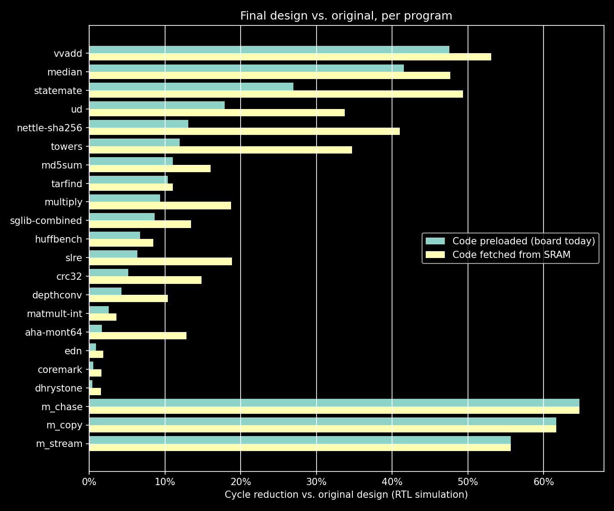
On the board at 50 MHz, the kernels took 1,342,041 cycles on the original design, 730,433 with the new controller and 520,505 with all changes, and median dropped from 21,737 cycles to 12,707. The 19 benchmarks took 3,790,660 cycles on the original design, 3,696,491 with the new controller and 3,672,931 with all changes, reductions of 2.5% and 3.1%. All 16 readout words matched simulation exactly in every run, which also confirmed on the hardware the byte order of the mixed-width block RAM port, previously checked only against a simulation model. Every version fits the same 52 block RAMs, uses 6,176 to 6,313 logic elements (the original uses 6,275) and meets 50 MHz with 0.95 to 1.20 ns of slack.
The work also exposed a gap in the testbenches, which had clocked the processor at 10 ns, half the board's period. The original controller samples read data three cycles after the address, so the SRAM model's access-time check could never fire, but a one-cycle read is only valid at the real 20 ns. The testbenches now run at 20 ns, so the SRAM model checks the timing the board actually sees, and every change passes the full regression at that period. Overall, since every miss was compulsory, reducing the cost of a miss from 42 cycles to 12 was the only route to faster memory, and it cut the cycles spent waiting on memory by 71%.
The two studies were carried out independently, each against the original design. This section explains why their savings combine exactly, describes the verification of the combined design, analyzes its critical path, and summarizes its final performance.
The final design combines the five memory changes of Section 6 with the 3,460-bit
tournament predictor of Section 5.7, which is now the default in defines.vh.
The savings of the two studies add without interaction, because each changes a different component of the cycle
count. A predictor changes only which branches flush, at one cycle each, while the memory system changes only how
long the pipeline is frozen on a miss. A wrong-path instruction is flushed from ID before it can reach MEM, so the
predictor never changes which addresses the data cache sees, and the 3,923 data cache misses are identical in every
configuration. Similarly, the load-use stalls were identical across all 162 predictor configurations simulated in
Section 5.2.
To illustrate, the cycle count of the 19 programs can be written as the sum of the instructions retired, the load-use stalls, the flushes and the cycles of data cache freeze, plus a fixed overhead of four cycles per program. On the final design, the programs retire 3,351,095 instructions with 59,723 load-use stalls, 180,387 flushes and 47,077 cycles of freeze, which together with the 76-cycle overhead give 3,638,358 cycles. This total is exactly the 3,672,931 cycles of the faster memory system with the bimodal predictor (Section 6.7), minus the 34,573 cycles that the tournament saves (Section 5.8).
The combined design passed the full regression at 20 ns, comprising the unit tests, the directed tests in every clock-enable and cache mode, and the random programs. All 19 benchmarks were then run on the RTL in Icarus Verilog, where each retired exactly the instructions that rvsim did, and the mispredictions matched the predictor sweep of Section 5 on every program, 133,677 in total. Finally, all 19 programs were run on the board, and every readout word matched simulation, including the total of 3,638,358 cycles. The combined design therefore behaves exactly as the two studies predicted, both in simulation and on the hardware.
At this size, the predictor's lookup is the slowest path in the processor, as shown in Figures 1, 12 and 13. Branches are predicted in ID, and the prediction selects the next fetch address in the same cycle. Within one 20 ns cycle, therefore, the PC in ID must select the branch's local history, the history must select its counter, and the prediction must steer the next PC into the instruction cache's address register. In the build shown, this path takes 19.6 ns and leaves 0.385 ns of slack, for an Fmax of 51.0 MHz.
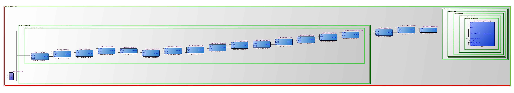
Figure 12 shows that the path passes through 18 logic cells, 15 of them inside the predictor, yet only about 5 ns of the delay is logic, while 14.6 ns is routing. The predictor alone occupies 7,691 of the design's 13,077 logic elements, so its tables are spread across much of the chip, and the lookup crosses the die several times (Figure 13). Although the design uses only 70% of the logic elements, the fitter spreads them across 1,162 of the 1,172 logic array blocks. This spreading reflects the same constraint that prevented the flat 4 Kbit tables of Section 5.7 from fitting: the fitter runs out of logic array blocks well before it runs out of logic elements.
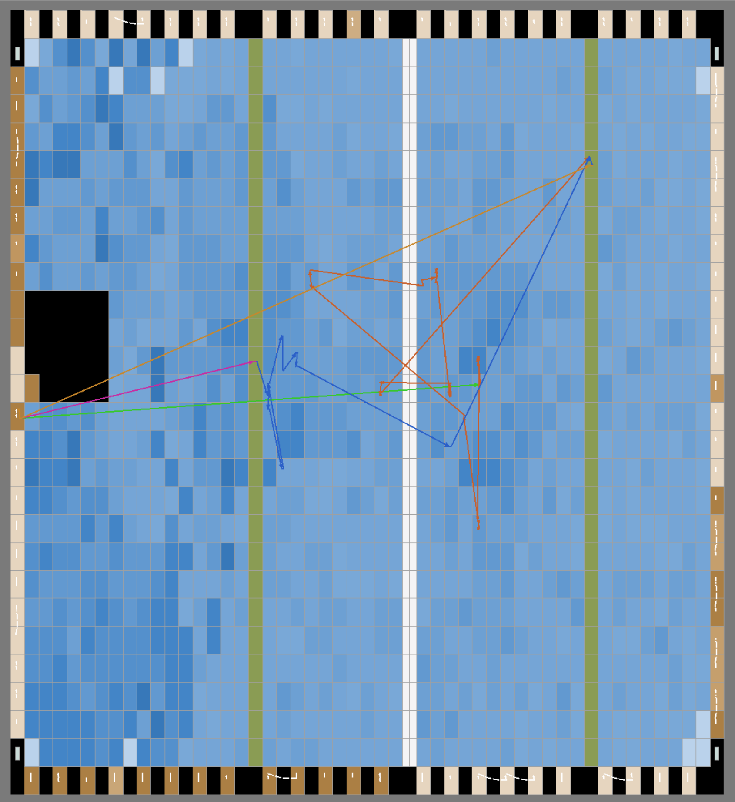
The second slowest path, with 0.415 ns of slack, carries a load's data from the data cache's block RAM through forwarding into EX and the redirect to the same address register. Both paths therefore end at the next fetch address, which reflects the cost of resolving a redirect within a single cycle. Placement also varies between compilations: the build used for the board runs in Section 7.2 met timing with 0.32 ns of slack, with its slowest path running from the data cache's block RAM to the predictor's training logic. In either build the margin is only a few hundred picoseconds, so a larger predictor would require either an additional pipeline stage in its lookup or a slower clock.
Table 9 summarizes the 19 benchmarks on the board (Figure 14) for the original design, the design with the faster memory system, and the final design. The final design runs the benchmarks in 4.0% fewer cycles than the original, reducing the cycles per instruction from 1.131 to 1.086. The memory changes contribute about three quarters of this saving (117,729 cycles), and the predictor the remaining quarter (34,573 cycles).
| Design | Cycles | Cycles per instruction | Flushes | Load-use stalls | Data cache freeze |
|---|---|---|---|---|---|
| Original, bimodal predictor | 3,790,660 | 1.131 | 214,960 | 59,723 | 164,806 |
| Faster memory, bimodal predictor | 3,672,931 | 1.096 | 214,960 | 59,723 | 47,077 |
| Final: faster memory, 3,460-bit tournament | 3,638,358 | 1.086 | 180,387 | 59,723 | 47,077 |
jalr redirects, which no predictor affects.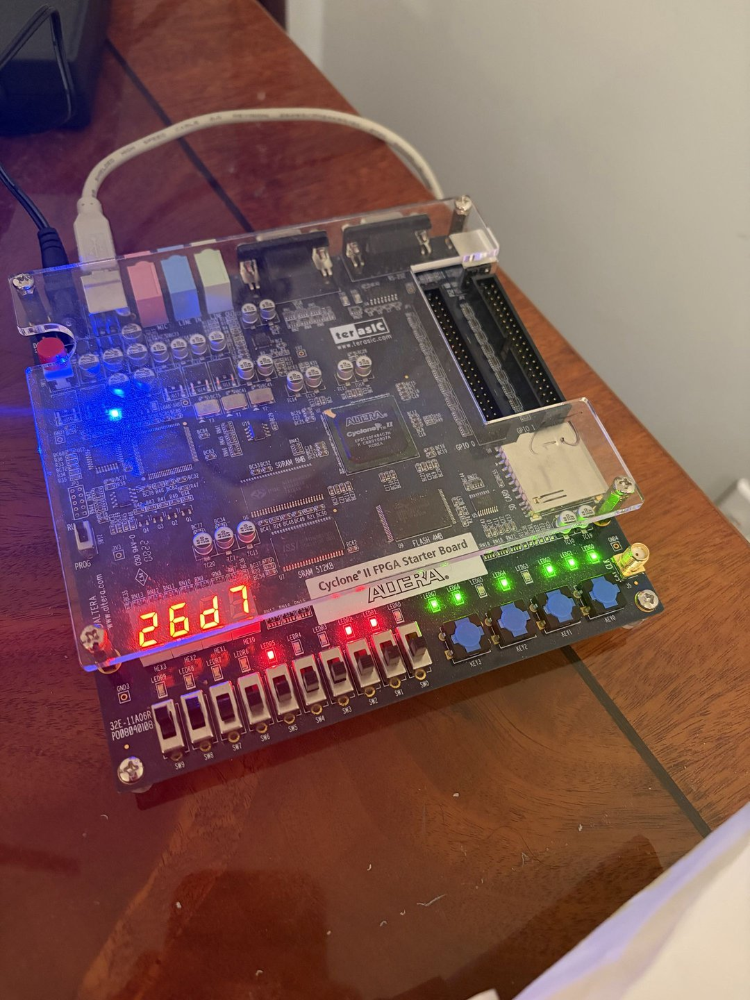
Verilog, Icarus Verilog, Quartus II 13.0sp1 (TimeQuest, Chip Planner, Technology Map Viewer, In-System Sources and Probes), RISC-V GCC, Python, NumPy, Matplotlib, Tcl.